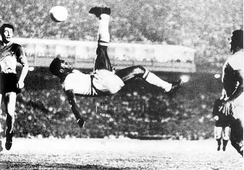
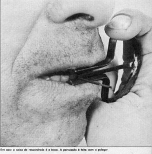

A capoeira é cheia de curiosidades. Já influenciou várias outras artes marciais, e até o futebol. Acredita? Então confira algumas curiosidades sobre a capoeira.
|  |
|  |
- O gol de bicicleta utilizado no futebol teve influência dos movimentos da Capoeira.
- Havia prisão e trabalho forçado para quem fosse pego praticando capoeira na época da proibição, no Brasil República.
- O uso de uma argolinha de ouro na orelha era tido como sinal de força e valentia dos negros.
- Nas rodas os capoeiristas jogavam sem manchar o branco de suas vestes e sem deixar cair o chapéu. Era considerado um bom jogador aquele que conseguisse sair da roda com o terno impecavelmente limpo.
- Milhares de capoeiristas foram para a Guerra do Paraguai, pois havia sido prometida a liberdade no final do conflito àqueles que participassem da batalha.
- Os capoeiristas eram contratados pelos políticos para bagunçar no dia das eleições. Enquanto as pessoas desviavam a atenção para a confusão dos capoeiras um indivíduo colocava um maço de chapas na urna ou na linguagem da época "emprenhava a urna". Vencia as eleições o candidato que dispunha de maior número de capoeiras.
- Os capoeiristas costumavam usar calças boca de sino e no período em que a capoeira ficou proibida por lei. A polícia para detectar os capoeiristas colocava um limão dentro das calças do indivíduo. Se o limão passasse pelas pernas e saísse pela boca das calças, a pessoa era considerada capoeirista.
- Por volta de 1870, Mestre Bimba e Mestre Pastinha reinventam a capoeira, reordenando seu lugar na ordem social tirando da esfera do crime para o campo da educação física.
- Atualmente há aproximadamente nove milhões de praticantes de Capoeira no mundo, apenas 35% são mulheres.
- O Berimbau de boca era usado na época da colonização, a caixa de ressonância era a boca e a percussão feita com o polegar.
Fonte: http://capoeiramagiagrande.blogspot.com/2014/02/dez-curiosidades-sobre-capoeira.html